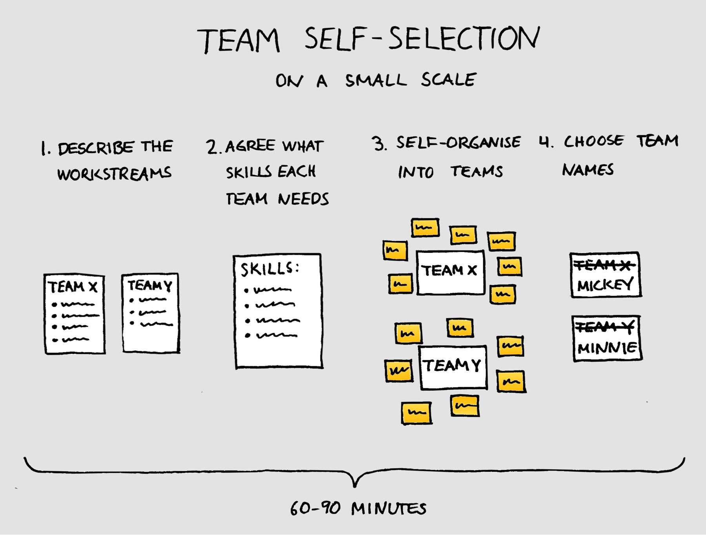

Self-selecting teams on a small scale

You don’t need a lot of people for self-selection to be useful.
Self-selection is a practice where people get to choose for themselves which team they want to be in. Typically, it is associated with large scale agile implementations and obviously, it does make sense to tackle the complicated task of organising 50 or 100 people into teams the same way we as so often solve complicated tasks in agile: self-organisation. But how about using self-selection on a much smaller scale?
In this post, I will describe a recent experience I had with self-selection in our two Scrum teams. Spoiler alert: it worked great!
First, a bit of background.
I work in a team that is one amongst many others in a large organisation. We are 16 people in total, including developers, testers, UX, product owner and the scrum master (hey, that’s me! :). In the past, we’ve tried running the team as one big Scrum team but found that it didn’t work very well, so we have split the team into two smaller teams. We call these sub-teams “crews”.
A few weeks ago, we had just finished the project we had been working on for the last several months. A few people had come and gone in the process, so our two crews had ended up being quite unbalanced in size. With new work about to start, it was time to form new crews.
The last time we did this, the tech lead decided who would be in each crew, which worked perfectly fine. This time around, though, the two crews would be working on two completely separate workstreams. That meant it would potentially matter a bit more for people which crew they were in.
Starting to think about the new crews, a rather obvious idea started to form: why don’t we let people decide for themselves? Let’s try self-selection!
The self-selection workshop
The day arrived and here’s the agenda we followed:
- Describe what each crew will be working on
- Agree what skills are needed for each crew
- Select the crews
- Choose team names
1. Describe what each crew will be working on
The first point was to describe what work each crew would be working on. For calendar-technical reasons, we had covered this in a separate meeting a couple of weeks beforehand, so we were able to just do a quick 5-minute summary, running through a few bullet points for each as a reminder. I’d probably do the same next time, as the separate session gave people time to think a bit about the upcoming work and it also helped to avoid the actual self-selection workshop getting too long.
2. Agree what skills are needed for each crew
As the facilitator, I then described what we were aiming for: two crews, each including all the skills necessary to deliver their work end-to-end and with roughly the same capacity for both crews.
Based on this, we discussed if we needed to be a bit more specific about the skills required for each crew. The list we ended up with was general and straightforward:
- Development (including a senior developer)
- Testing (including test automation)
- UX design
3. Select the crews
Next was the main event.
I reminded people that they were free to choose whichever crew they wanted and it was entirely up to them how they made their choice. Some things they might want to think about were what they wanted to work on, what they could contribute to the crew’s goal and what would make sense in terms of creating well-balanced crews.
In preparation, I had written each team member’s name on a post-it and put on the wall. When the selection started, each person took the post-it with their name and once the new crews started to stabilise, they put their name on the wall representing their crew.
Reading about how others have done this, common practice seems to be to run several 20-minute iterations where people move into possible teams, evaluating the result after each attempt and repeating until all criteria were fulfilled. I suspected that would be overkill for a group this small, so I set a ten-minute timer, explaining that if we hadn’t finished by then, we would discuss together which criteria we hadn’t met yet and what we could do about it.
It turned out that there was no need for the timer as less than three minutes later, we had our two ready-formed teams.
4. Choose crew names
The last point of the agenda was for the crews to choose their new names, which they set out to do with much enthusiasm. It was great to see everyone getting together to solve their first task in their new crews!
Conclusion
We created our two new teams in just under an hour and even had quite fun doing so. The resulting teams didn’t feel miles apart from the choices I imagine the tech lead would have made but had the important benefit that everyone was in a team they had chosen themselves. I don’t know if anyone ‘sacrificed’ themselves and went to a different team than they would have preferred, just to balance things out, but if they did, they did it of their choice, which must be a much better thing than being told “you will be working on this work and these are the people you will be working with”.
I’ll definitely use this method again the next time.
♻️ I republished this blog post here 22 November 2019 with minimal changes. The date below is when it was originally published on my old blog.
Back to blog

This work by Magnus Dahlgren is licensed under a Creative Commons Attribution 4.0 International License.